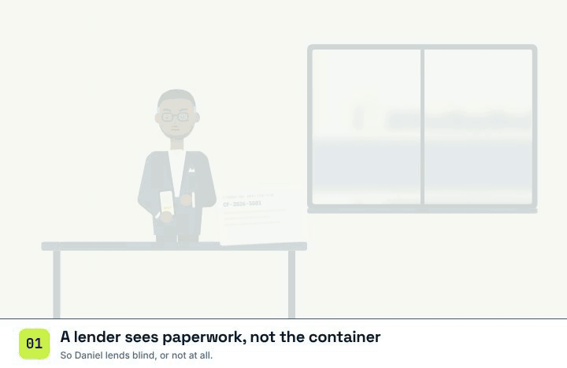
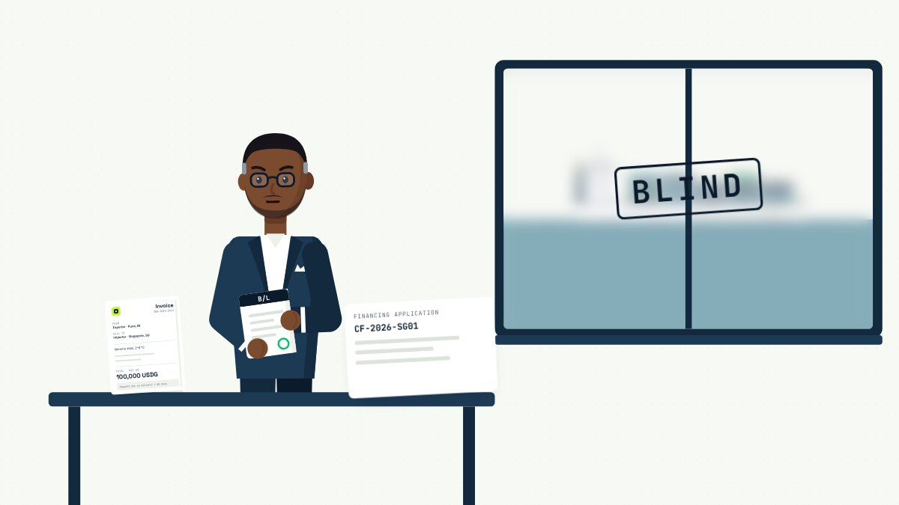
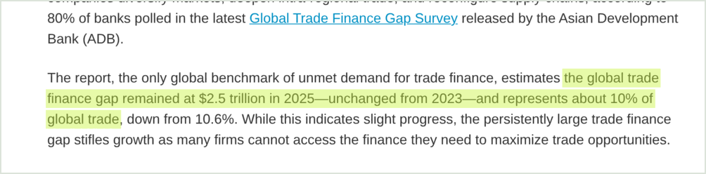
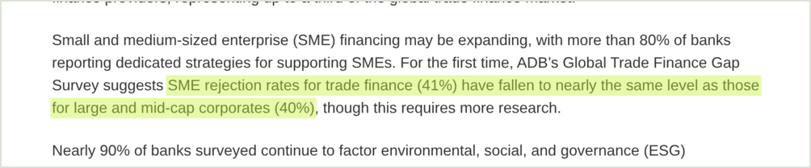

02 · The problem
Trade finance today
A lender sees paperwork, not the container.
So it lends blind, or it does not lend. The exporter waits about two months for cash it has already earned, while the cargo itself is at risk in transit.


Daniel, the financier: blind to the cargo$2.5Tglobal trade finance gap in 2025, about 10% of global tradeAsian Development Bank

41%of SME trade finance applications rejectedADB survey, Dec 2025

52 daysaverage B2B payment terms in India; 50% of B2B sales on creditAtradius, 2025

~$35Blost by biopharma each year to temperature-controlled logistics failuresIQVIA, via Air Cargo News

Sources, highlighted on the original pages (captured 3 Oct 2026): ADB news release, 15 Jan 2026 citing the ADB Global Trade Finance Gap Survey (Dec 2025) · Atradius Payment Practices Barometer India 2025, p. 3 · Air Cargo News, 26 Jul 2019, citing the IQVIA Institute
02 / 16